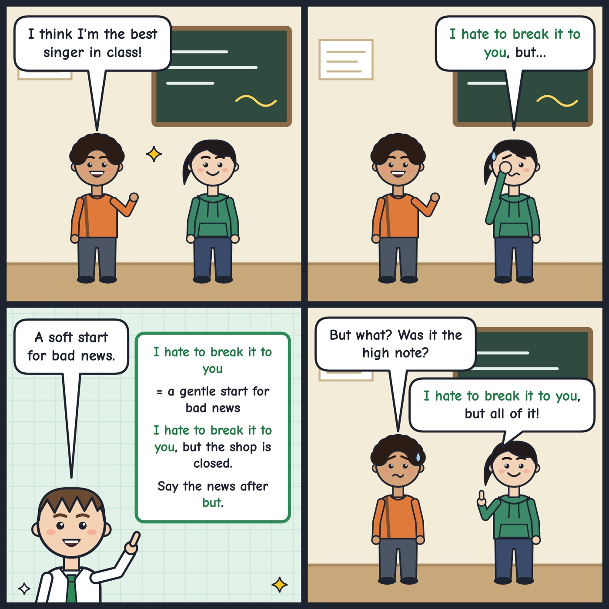

I hate to break it to you
A polite way to start telling someone news they may not like.
I hate to break it to you, but the shop is closed today.
Tip: Say it just before the bad news, then add 'but' and the news: 'I hate to break it to you, but...'; use it with people you want to stay kind to, and don't use it for good news.
Hear it in conversation
Workbook
1. What does it mean?
In this conversation, what does "I hate to break it to you" mean?
2. Fill the gap
, but the meeting has been moved to eight o'clock tomorrow morning.
3. Choose the best reply
Amira: Ken: I'm sure my landlord will give me my deposit back in full, even with the mark on the carpet.
4. Your turn: speak
Tell me about a time you had to give someone news they didn't want to hear. How did you handle it?
Show an example answer
Last year my cousin was planning a surprise party, and I found out the venue had double-booked her date. I called her and said, 'I hate to break it to you, but we'll need a new place.' She was upset at first, but we found another venue that same afternoon, so it worked out fine.
Answer key: I hate to break it to you
- 1. C. Diego is gently introducing news that Olena probably won't like.
- 2. I hate to break it to you
- 3. B. I hate to break it to you, but they usually take money off for stains like that.
- 4. Example: Last year my cousin was planning a surprise party, and I found out the venue had double-booked her date. I called her and said, 'I hate to break it to you, but we'll need a new place.' She was upset at first, but we found another venue that same afternoon, so it worked out fine.
See it in a comic
